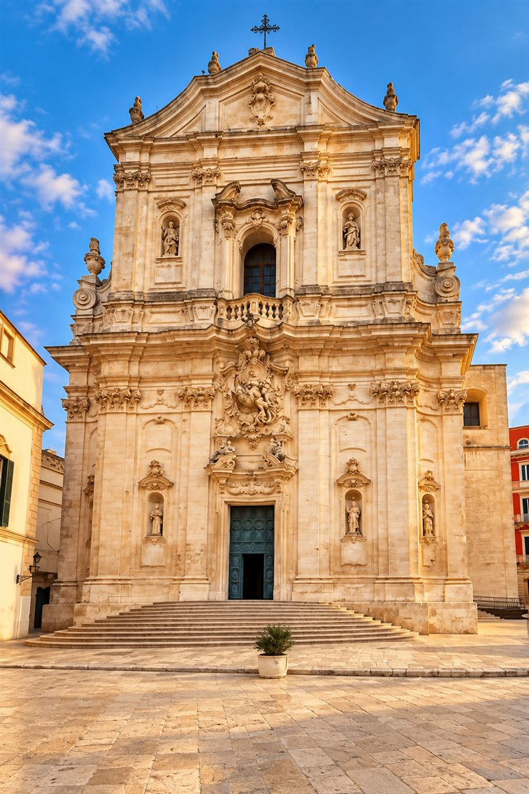
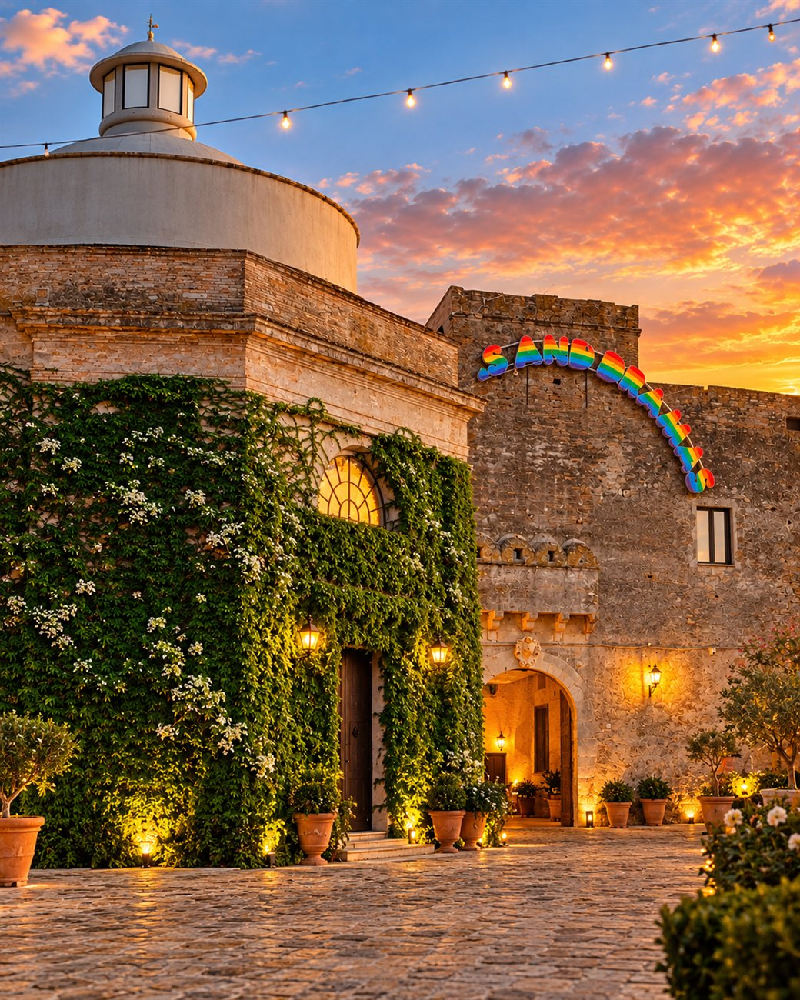

16:00
Cerimonia
Basilica di San Martino
Via Masaniello, 1
Martina Franca (TA)
Save the date
La giornata
Sabato 24 luglio 2027
Siamo felici di celebrare questo momento con le persone che amiamo.
16:00
Basilica di San Martino
Via Masaniello, 1
Martina Franca (TA)
17:00
Con gli sposi
18:30
Castello di San Basilio
Contrada Castello San Basilio
Pisticci (MT)
22:30
00:30
Afterparty
Ci siamo incontrati quando avevamo appena 14 e 15 anni, quando l’amore aveva ancora il sapore ingenuo delle prime emozioni e dei sogni più grandi di noi.
Eravamo poco più che ragazzi, eppure, senza saperlo, stavamo già scrivendo le prime pagine della nostra storia.
Poi la vita ci ha portati a percorrere strade diverse, ma senza mai allontanarci davvero. Siamo cresciuti, cambiati, ritrovati in modi nuovi, custodendo sempre quel filo invisibile che, nonostante il tempo, continuava a tenerci uniti.
Finché un giorno ci siamo guardati con occhi diversi, ma con lo stesso cuore di allora. E abbiamo capito che, forse, non avevamo mai smesso di sceglierci.
Perché certe storie non finiscono. Aspettano soltanto il momento giusto per diventare per sempre.
Alessandro & Sara
Il luogo della cerimonia
Nel cuore barocco di Martina Franca, la Basilica dedicata al patrono della città racconta una storia di fede e bellezza. L'attuale edificio nacque nel Settecento, quando dopo il terremoto del 1743 fu posta la prima pietra di un nuovo tempio rococò.
Riconosciuta dall'UNESCO come Monumento Messaggero di una Cultura di Pace, è un luogo in cui arte, storia e condivisione si incontrano.
La sua facciata, ricca di movimento e di luce, custodisce il celebre gesto di San Martino che dona il mantello al povero: un simbolo di condivisione, perfetto per il giorno in cui diremo il nostro sì.
Scopri la Basilica

Il luogo della festa
Su una collina tra gli ulivi della costa jonica lucana, il Castello di San Basilio conserva oltre mille anni di storia. Nato come insediamento monastico e poi trasformato in fortificazione, ha attraversato epoche e comunità diverse.
Oggi la sua torre e le sue pietre antiche aprono le porte a una serata da vivere insieme: il nostro modo di aggiungere un piccolo capitolo a una storia lunghissima.
Scopri il CastelloPer voi
Conferma di partecipazione
Vi chiediamo gentilmente di confermare la vostra presenza entro il 15 maggio 2027, compilando il modulo qui sotto.
Non vediamo l’ora di festeggiare insieme a voi! 🤍
Compila l'RSVPIl modulo si aprirà in una nuova pagina.